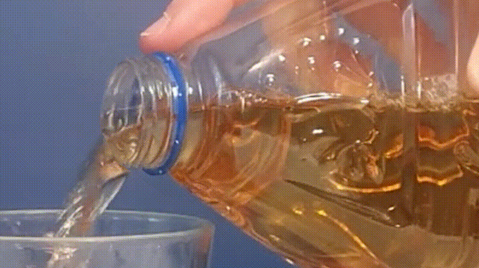
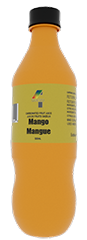
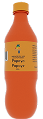
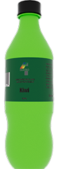
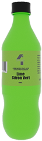
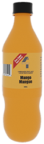
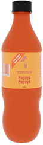
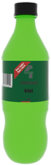
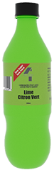

Cinemagraph

An All-New Refresh of a Refreshing Drink
Quatro has been revived for the new generation, as a series of carbonated fruit juices for enjoying at home or out and about
Carbonated Fruit Juice
Quatro carbonated fruit juices are made with real fruit juice and nothing else added, ensuring the perfect balance of the blend between taste and refreshment. Below are flavours in papaya, mango, kiwi and lime.




View Nutrition Facts
Per 1 Cup (250 mL)
Calories: 80
Item & Amount (Daily Value)
- Fat: 0 g (0%)
- Saturated: 0g (0%)
- Carbohydrates: 22 g
- Fibre: 0 g
- Sugars: 20 g (20%)
- Protein: 0.1 g
- Cholesterol: 0 mg
- Sodium: 20 mg (1%)
- Potassium: 20 mg (1%)
- Calcium: 0 mg (0%)
- Iron: 0 mg (0%)
- Vitamin C: 63 mg (70%)
Ingredients
Carbonated water, Concentrated juice, Ascorbic acid (vitamin C)
*5% or less is a little, 15% or more is a lot
Zero Sugar Juice
Made with real fruit juice, Quatro Zero Sugar Fruit Juices, are just as refreshing and taste like our regular carbonated fruit juice with NO SUGAR ADDED. We have sugar-free variants of papaya, mango, kiwi and lime.




View Nutrition Facts
Per 1 Cup (250 mL)
Calories: 80
Item & Amount (Daily Value)
- Fat: 0 g (0%)
- Saturated: 0g (0%)
- Carbohydrates: 2 g
- Fibre: 0 g
- Sugars: 0 g (0%)
- Protein: 0.1 g
- Cholesterol: 0 mg
- Sodium: 20 mg (1%)
- Potassium: 20 mg (1%)
- Calcium: 0 mg (0%)
- Iron: 0 mg (0%)
- Vitamin C: 63 mg (70%)
Ingredients
Carbonated water, Concentrated juice, Ascorbic acid (vitamin C)
*5% or less is a little, 15% or more is a lot
Juice Cans
Quatro Juice Cans are a quick way to have our carbonated fruit juice while you’re on the go! Launching in July of 2026, you can now have Quatro as a quick pick-me-up, with your lunch or in the car with you on the go. We’ll have the design and size for the cans ready by June of 2026.
Juice Boxes
Quatro Juice Boxes are a quick way to give your kids a refreshing drink in their lunch, their sporting events or out on their daily life. We’re currently doing a survey on whether carbonated juice or regular juice should be used for the boxes, and once the survey has been completed at the end of May, we will start production on box design and capacity to prepare for the 2026-27 school year.